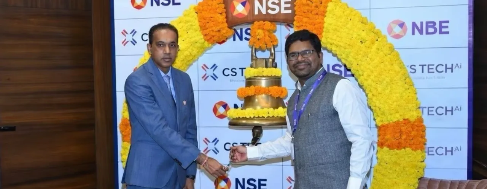

Chairman Highlights Decade of Growth and Shareholder Value

Mumbai, [19-Feb-26] – CS TECH Ai (Ceinsys Tech Limited), a publicly listed technology-led engineering and geospatial infrastructure solutions company, today marked the commencement of trading of its equity shares on the National Stock Exchange of India (NSE) with a ceremonial bell ringing event.
The Company has been listed on the BSE since 2014. Its NSE listing represents a significant milestone in its capital markets journey, further enhancing investor access, liquidity, and market visibility.
Addressing stakeholders during the ceremony, Chairman and Whole Time Director Mr. Sagar Meghe reflected on the Company’s evolution and reaffirmed its long-term growth vision.
“When we chose to go public in 2014, our objective was to build a transparent, growth-oriented institution and share our success with all stakeholders. Today, as we mark our listing on the NSE, we strengthen our commitment to further disciplined expansion, governance, and long-term value creation for the shareholders while working to provide advanced technology and AI enabled engineering solutions for the Geospatial initiatives for various domains of Infrastructure development.”
A Decade of Sustained Financial Progress
Since FY 2014–15, CS TECH Ai has delivered consistent financial growth:
- Revenue increased from ₹108 crore in FY 2014-15 to ₹418 crore in FY 2024-25.
- In the first nine months of FY 2025-26, revenue at Rs. 490 cr has already surpassed the full-year FY 2024-25 level.
- EBITDA improved from ₹20 crore in FY 2014-15 to ₹98 crore in FY 2024-25, crossing ₹128 crore in the first nine months of FY 2025-26.
- Profit After Tax grew from ₹7 crore in FY 2014-15 to over ₹96 crore in the first nine months of FY 2025-26.
The Company has consistently awarded its shareholders, declaring aggregate dividends of approximately 215% since FY 2014-15 to FY 2024-25.
Engineering Depth Combined with AI-Led Innovation
CS TECH Ai operates across critical infrastructure domains including water, energy, transportation, land & asset management, and utilities.
During his address, the Chairman highlighted key initiatives shaping the Company’s strategic direction:
- Deployment of IoT-enabled monitoring systems for rural water supply programs
- Development and implementation of the Digital Project Management System (DPMS), enabling online and real time monitoring of 900+ water infrastructure schemes in the state of Maharashtra.
- Execution of Technical Detailed Project Reports (DPRs) for large inter-basin river linking initiatives which aims to provide additional irrigation to excess of 4 lakh hectares of land in Vidarbha.
- Application of AI-driven analytics and digital twin technologies to enhance infrastructure planning and lifecycle management
These initiatives underscore the Company’s strategy of combining deep engineering expertise with geospatial intelligence and AI-enabled digital platforms to support large scale infrastructure development.
Looking Ahead
With its presence on both BSE and NSE, CS TECH Ai aims to broaden institutional participation, strengthen liquidity, and further reinforce its governance framework while continuing to invest in innovation and scalable digital infrastructure solutions.
The Company remains focused on sustainable growth and long-term value creation, aligned with India’s accelerating infrastructure expansion.
Our certifications – ISO 9001:2015, ISO 14001:2015, ISO 45001:2018, ISO/IEC 20000-1:2018, and ISO/IEC 27001:2022 – reflect our unwavering commitment to quality, environmental management, occupational health & safety, IT service excellence, and information security.